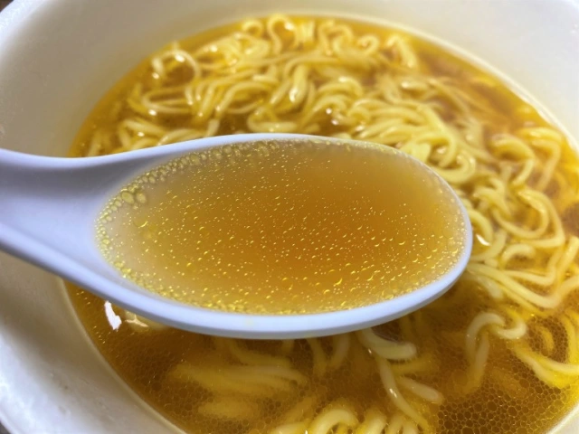

Sad Noodles

This is the bottom of the barrel of poverty foods you can eat, and now you can learn how to make it too!
Ingredients:
- The cheapest ramen you can find
- The included seasoning packet
- The cleanest water you can find
Steps:
- Get out your only sauce pan
- Fill that bitch up with some clean water, if possible
- Boil that water to make it even cleaner
- Once boiling, quickly unwrap the ramen noodles but be sure to spill crumbs everywhere
- Throw that sad square of carbs into the boiling water
- Wait, you god damn animal, for two minutes
- Struggle to open the seasoning packet but eventually pour it all in the pan and stir for an additional minute
- Eat the sad noodles directly out of the pan, then drink the broth to sustain your weak body
Home